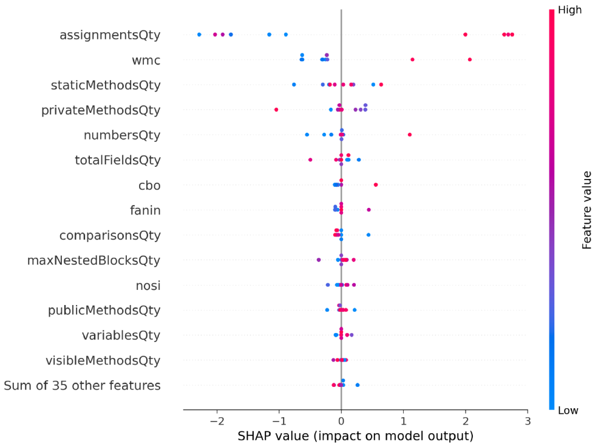

üìò What It Does
This project predicts the Worst-Case Execution Time (WCET) of embedded system loops using machine learning. It analyzes static code metrics to estimate performance bottlenecks and optimize safety-critical systems.
üõ†Ô∏è Techniques & Tools
- Python, Pandas, Scikit-learn
- Decision Tree & Random Forest Regressors
- SHAP Explainability (Beeswarm & Waterfall)
- Custom static metric engineering from TRDDC-TUM benchmarks
- Streamlit Dashboard for real-time prediction
✅ Project Outcome
Achieved accurate prediction of loopQty and WCET.
Built a fully functional dashboard with SHAP explanations, enabling developers to understand performance risks with transparency.
üîó Links
üìä Dashboard Preview
Upload → Predict loopQty & WCET → Explain with SHAP.
üîç SHAP Explainability
Global feature impact for loop prediction.

Local explanation for a complex function.